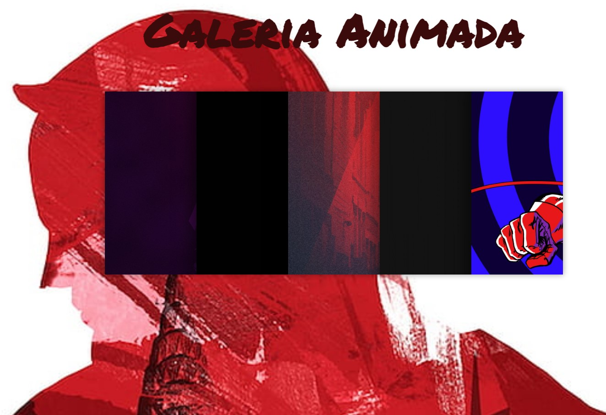
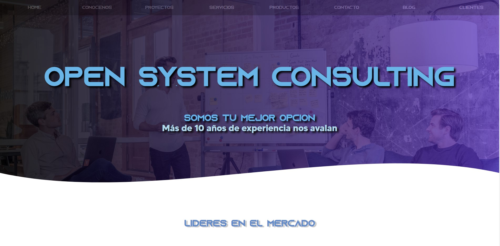

Trabajos
Inicio
CV
Trabajos
Algunos proyectos que he realizado...

Galeria animada tematizada del personaje de marvel "daredevil", esta hecha con css y html.
https://bucce2002.github.io/web-animaciones/
Proyecto Iot en el cual hago un un parking inteligente implementando arduinos.
https://github.com/bucce2002/Smart-Parking-IOT/
Galeria de imagenes con efecto "overlay" hecha con css y html, basada en el personaje de la franquicia de naruto "itachi".
https://bucce2002.github.io/WebAnimaciones/
Aplicacion para la gestion de las FCT, esta hecha con java Swing y mysql.
https://github.com/DAM-UEM-2021/bbdd---tarea-7---alta-baja-y-modificacion-reunion-de-cabros

Pagina web de una consultora informatica, con diversos apartados y hecha con html, css y js.
https://sarafera.github.io/Open-System-Consulting/
Web de una tienda informatica en donde aplico distintas Tecnologias como lo son css y html.
https://bucce2002.github.io/Web-Jesus-Bucce/